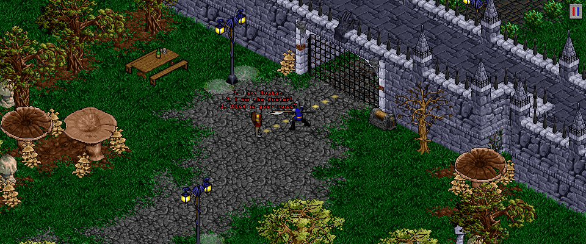
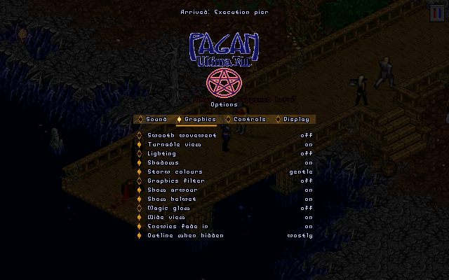

PaganRebuild
Eine neu geschriebene Engine für Ultima VIII: Pagan, in Rust.
A newly written engine for Ultima VIII: Pagan, in Rust.
Was ist das?What is it?
PaganRebuild ist eine neu geschriebene Engine für Ultima VIII: Pagan in Rust. Sie spielt das Spiel direkt mit den Originaldaten, ohne DOSBox, und bringt zuschaltbare Verbesserungen mit.
Spieldaten sind nicht enthalten. Du brauchst eine eigene Kopie des Spiels, z. B. die Ultima 8 Gold Edition bei GOG.
PaganRebuild is a newly written engine for Ultima VIII: Pagan in Rust. It plays the game straight from the original data, without DOSBox, and adds improvements you can switch on and off.
No game data is included. You need your own copy of the game, for example the Ultima 8 Gold Edition on GOG.




InstallationInstallation
- Das Release-Zip in den Ultima-8-Ordner entpacken (dorthin, wo
ENGLISH\liegt). - Optional: das Musik-Zip an dieselbe Stelle entpacken (orchestrale Neuaufnahme).
PaganRebuild\pagan.exestarten, deutsche Fassung mit--lang german.
- Extract the release zip into the Ultima 8 folder (where
ENGLISH\is). - Optional: extract the music zip to the same place (orchestral re-arrangement).
- Run
PaganRebuild\pagan.exe(German version:--lang german).
Windows 64-bit. Linux und macOS sind noch nicht getestet. Die französische Fassung startet mit --lang french.
Windows 64-bit. Linux and macOS are not tested yet. The French version starts with --lang french.
FunktionenFeatures
Die Verbesserungen lassen sich im Optionsmenü (V oder F10) einzeln ein- und ausschalten.
The improvements can be switched on and off one by one in the options menu (V or F10).
Grafik
- Weiche Bewegung von Figuren und Ansicht
- Breitbild: mehr von der Welt zu den Seiten
- Drehbare Ansicht (, / .)
- Zoom in Stufen von 75 bis 200 % (+ / -)
- Beleuchtung durch Lampen und Feuer (L), Schatten der Figuren
- Grafikfilter: scharf, xBR oder Röhrenmonitor (CRT) (G)
- Rüstung und Helm sind am Avatar zu sehen, magische Teile leuchten
- Umriss des Avatars, wenn er verdeckt ist
- Gewitterfarben: wie im Original, sanfter oder aus
- Gegner blenden ein, statt plötzlich da zu sein
Ton
- Musik über SoundFont statt des Windows-Synthesizers
- Album-Musik: die orchestrale Neuaufnahme, wenn ihre Dateien da sind
- Verbesserter Klang: Effekte und Stimmen neu in 44,1 kHz, ohne Rauschen
- Räumlicher Klang nach Richtung und Entfernung
- Sieges-Fanfare nach einem Kampf (zuschaltbar)
- Getrennte Lautstärke für Musik, Effekte und Sprache
Steuerung
- Moderne Steuerung: Linksklick benutzt (der Avatar geht hin), Rechtsklick sieht an, E benutzt das Nächstliegende
- Laufen per Klick; Taste gehalten: der Avatar folgt dem Zeiger
- Kämpfen per Klick auf den Gegner, F schlägt den nächsten Gegner, Q tritt, B blockt
- Pfeiltasten oder WASD, wahlweise entlang der schrägen Wege und Mauern
- Springen und Klettern an Kanten mit der Leertaste
Anzeige und Hilfen
- Lebensbalken über den Gegnern
- Einstellbare Schriftgröße, Namen unter dem Zeiger
- Minikarte (M), Karte mit Ortsliste und Wegweiser (O)
- Leicht übersehene Rätselstellen werden benannt (H)
- Besseres Inventar mit festen Plätzen
- Tagebuch der Aufgaben (T) und Zauberbuch mit Worten und Reagenzien (N)
- Fortschritt von Stärke, Intelligenz und Geschick
Spielablauf
- Gegner bemerken den Avatar früher
- Gegner warten, solange ein Gespräch läuft
- Figuren meiden Flammen, die sie verletzen
- Schlafen bis zu einer gewählten Tageszeit
- Gegenstände rasten auf dem Pentagramm ein, der Avatar erreicht das ganze Pentagramm
- Avatar-Menü mit den Cheats des Originals (anfangs aus)
Immer dabei
- Überblenden beim Wechsel durch Tore und Teleporter
- Schnellspeichern und -laden (F5 / F9), Speicherbuch mit acht Plätzen (F6 / F7)
- Sechsfache Geschwindigkeit, solange F4 gehalten wird
- Dächer ein/aus (R), Bildschirmfoto (F12)
- Englisch, Deutsch und Französisch
Startoptionen
--langSprache,--gameSpielordner--scale 1–4Fenstergröße,--sizeBildgröße--no-sound,--no-menu,--cheat- Alle Optionen:
pagan --help
Graphics
- Smooth movement of figures and view
- Wide view: more of the world to the sides
- Turnable view (, / .)
- Zoom in steps from 75 to 200 % (+ / -)
- Lighting from lamps and fires (L), shadows of the figures
- Graphics filter: sharp, xBR or tube monitor (CRT) (G)
- Armour and helmet show on the Avatar, magic pieces glow
- Outline of the Avatar when he is hidden
- Storm colours: as in the original, gentler or off
- Enemies fade in instead of popping up
Sound
- Music played with a SoundFont instead of the Windows synthesizer
- Album music: the orchestral re-arrangement, when its files are present
- Better sound: effects and voices rebuilt at 44.1 kHz, without hiss
- Spatial sound by direction and distance
- Victory fanfare after a fight (optional)
- Separate volume for music, effects and speech
Controls
- Modern controls: left click uses (the Avatar walks there), right click looks, E uses the nearest thing
- Walk by clicking; hold the button and the Avatar follows the pointer
- Fight by clicking on an enemy, F strikes the nearest enemy, Q kicks, B blocks
- Arrow keys or WASD, optionally along the slanted roads and walls
- Jump and climb ledges with the space bar
Display and aids
- Health bars above enemies
- Adjustable text size, names under the pointer
- Minimap (M), map with a list of places and a guide (O)
- Easily missed puzzle spots get a name (H)
- Better inventory with fixed slots
- Quest journal (T) and spell book with words and reagents (N)
- Progress of strength, intelligence and dexterity
Gameplay
- Enemies notice the Avatar sooner
- Enemies wait while a conversation goes on
- People avoid flames that would hurt them
- Sleep until a chosen time of day
- Items snap into place on a pentacle, and the Avatar reaches all of it
- Avatar menu with the original's cheats (off at first)
Always on
- Fade when passing through gates and teleporters
- Quick save and load (F5 / F9), save book with eight slots (F6 / F7)
- Six times the speed while F4 is held
- Roofs on/off (R), screenshot (F12)
- English, German and French
Command line
--langlanguage,--gamegame folder--scale 1–4window size,--sizepicture size--no-sound,--no-menu,--cheat- All options:
pagan --help
MusikMusic
Das Musik-Zip enthält „Ultima VIII: Pagan - Orchestral Re-Arrangement“, mit freundlicher Erlaubnis. Diese Musik steht nicht unter der GPL.
The music zip contains "Ultima VIII: Pagan - Orchestral Re-Arrangement", with kind permission. This music is not under the GPL.
Original music: Nenad Vugrinec
Arrangement and orchestration: Dustin Naegel
https://dustinnaegel.bandcamp.com/album/ultima-viii-pagan-orchestral-re-arrangement
Credits
Based on the work of ScummVM (formerly Pentagram), https://www.scummvm.org/.
SoundFont: GeneralUser GS by S. Christian Collins, https://www.schristiancollins.com/generaluser.php.
Ultima VIII: Pagan (c) 1994 Origin Systems / Electronic Arts. Fan project, not affiliated with Electronic Arts or Origin Systems.
Lizenz: GPL-3.0-or-later
License: GPL-3.0-or-later